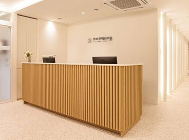
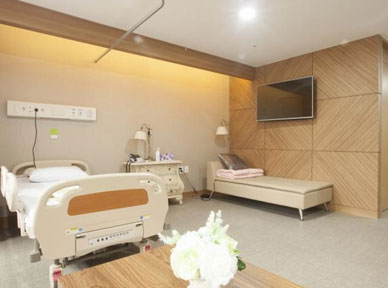
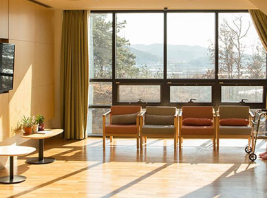
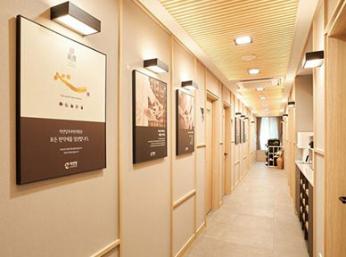
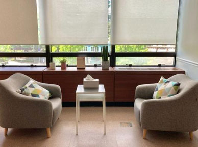
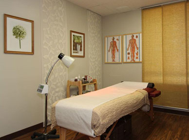
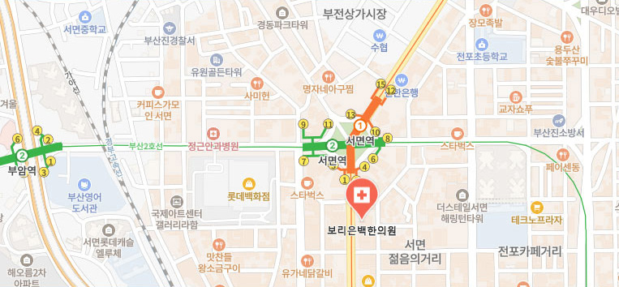

몸의 작은 신호까지 놓치지 않고, 근본 원인을 찾아
건강한 회복을 돕겠으며, 오래도록 건강한 삶을
유지할 수 있도록 근본적인 회복의 방향을
제시합니다.
저는 치료에서 가장 중요한 것은 병의 증상만을 바라보는 것이 아니라,
그 원인을 깊이 살펴 근본부터 회복시키는 것이라고 생각합니다.
한의학의 고전인 황제내경에서도 말하듯, 큰 병이 되기 전에 몸의
작은 신호를 살피고 미리 다스리는 것이 건강을 지키는 가장 중요한
시작입니다
무엇보다 환자분들이 편안한 마음으로 자신의 몸 상태를 이야기할
수 있는 진료, 그리고 충분한 소통 속에서 신뢰를 쌓아가는 진료를
중요하게 생각합니다. 치료의 시작은 결국 사람에 대한 이해와
공감에서 비롯된다고 믿기 때문입니다.
앞으로도 늘 같은 마음으로 환자 한 분 한 분의 건강을 진심으로
고민하며, 보다 건강하고 편안한 일상을 되찾을 수 있도록
함께하겠습니다.
BREB Korean Medicine Clinic
보리은백한의원은 예약부터 진료, 치료 후 사후 관리까지
각 과정에 전문 인력이 직접 참여하여 보다 체계적이고
수준 높은 의료 서비스를 제공합니다.
환자 한 분 한 분이 더욱 편안하고 안전하게 진료받을 수
있도록 세심한 시스템을 구축하였으며,
대기부터 상담, 치료, 회복 과정까지 불편함 없이 이어질
수 있도록 꼼꼼하게 관리하고 있습니다.
단순히 증상만을 바라보는 진료가 아닌 환자의 생활 습관
과 몸의 상태를 함께 살피며 근본적인 회복의 방향을
고민합니다.
몸의 불편함을 치료하는 것을 넘어 환자의 일상과
회복 과정까지 함께 고민하며, 신뢰할 수 있는 진료로
건강한 변화를 만들어가겠습니다.
신환 및 당일 내원도
효율적인 프로세스로 신속 대응
초진/재진 환자의 진료 및 수술
모두 사전예약제로 운영하며
대기 시간을 최소화
각 분야의 전문 진료를 수행하던
대학병원 출신 인력이
검사 및 수술 참여
예약 없이도 응급 상황 시
즉시 진료 및 수술 준비
소아/근시 치료 진료실,
본 진료 전 예진실 운영등으로
심층 상담 및 맞춤 치료 제공






진료시간
평 일 오전 8시 ~ 오후 9시 (야간진료)
점 심 시 간 오후 1시 ~ 오후 2시
토/일/공휴일 오전 8시 ~ 오후 5시
※ 365일 무휴, 설날/추석 등 모든 공휴일 진료
주말/공휴일 점심시간 없이 진료

부산 부산진구 중앙대로 708 부산파이낸스센터 4층 (서면역 2번 출구에서 88m)